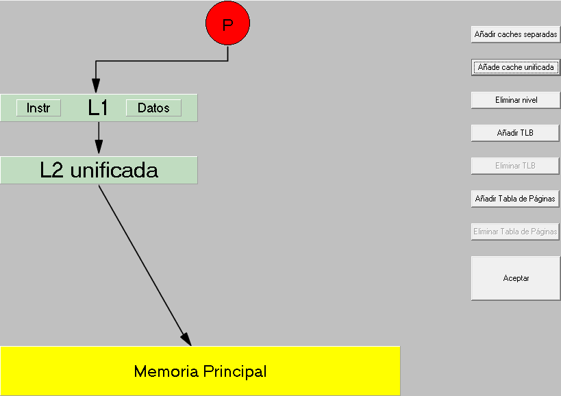
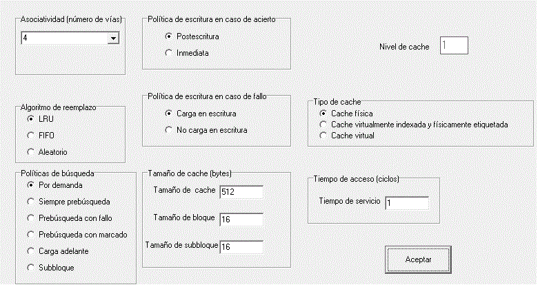
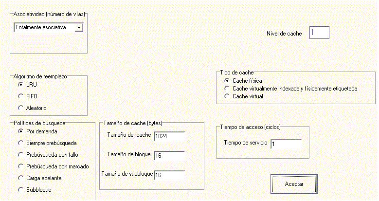
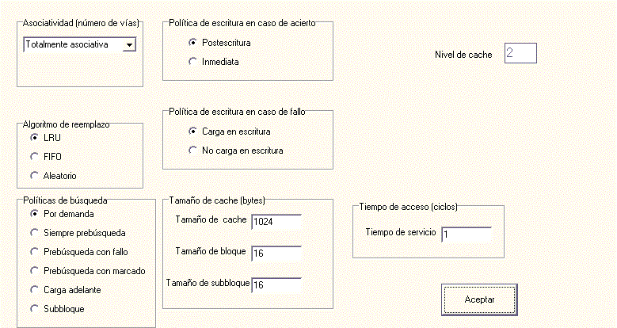
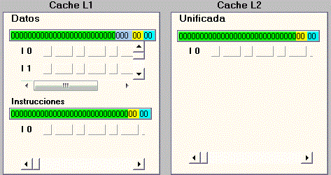
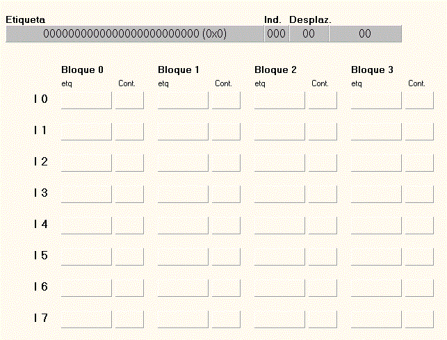
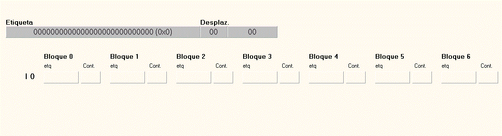
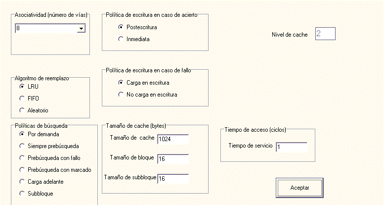
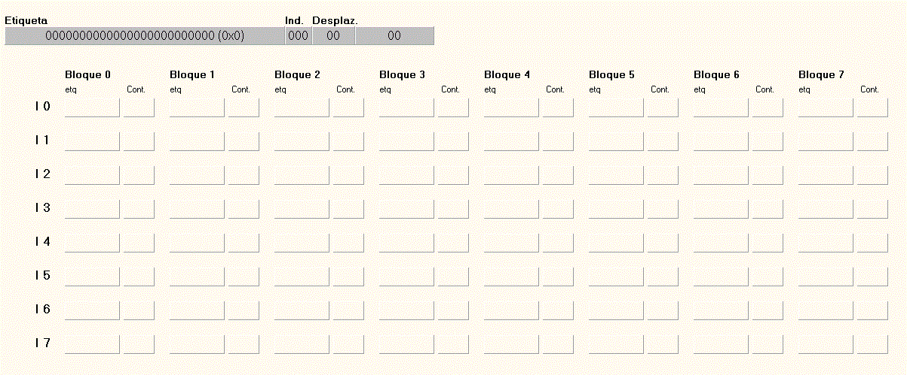

Buscar ayuda sobre
cache
volver a Ayuda
En esta parte de la ayuda se trata de explicar con algo más de detalle una simulación paso a paso.
El primer paso en toda simulación es configurar la jerarquía, en este primer ejemplo sólo se configurarán las caches. Para ello se seleccionará la opción de menú Configurar>jerarquía. Pulsando sobre los botones Añadir caches separadas y Añade cache unificada se añadirán dos niveles de cache.

Una vez creados los niveles, pulsando sobre cada uno de ellos se puede configurar. A continuación se configura el nivel 1 :

Configuración cache de instrucciones de nivel 1:

Y a continuación el nivel 2:

Una vez configurados los distintos niveles en la ventana de simulación, ya aparecerán los formatos de dirección de cada cache de los niveles, así como los bloques que componen las caches. En la siguiente figura se muestra, como para memorias asociativas L2 y la cache L1 de instrucciones no tienen el campo conjunto en la dirección ya que todos los bloques van al mismo conjunto, no ocurre lo mismo con la cache de datos L1 en la que hace falta un campo de 3 bits, ya que se ha indicado en la configuración que la asociatividad sea de 4 vías (4 bloques por conjunto), de este modo hay que quitar al campo etiqueta los bits necesarios para direccionar los conjuntos (512/(16*4)), en total 3 bits para 8 conjuntos.También aparecerán las ventanas de los datos en detalle de la cache.
Ventana simulación estado de las caches:

Ventana estado de la cache de datos de nivel 1:

Ventana estado de la cache instrucciones de nivel 1:

Modificando el grado de asociatividad en la cache L2 se puede ver como el formato de etiquetas y la distribución de los bloques en los conjuntos cambia.

Quedando la configuración de la siguiente manera:
